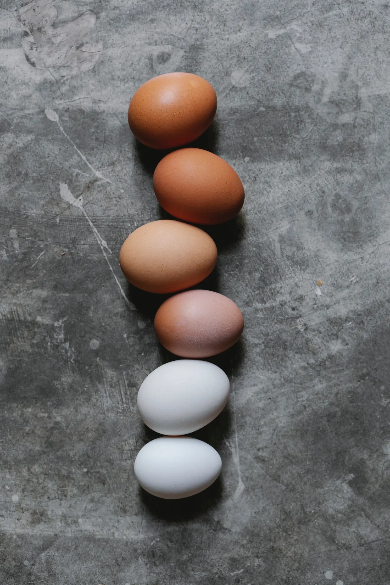

Waarom zijn eiwitten zo belangrijk voor ons lichaam?
Wil jij weten hoe je jouw lichaam op de juiste manier kan voeden met eiwitten? Lees dan verder! Eiwitten zijn de bouwstenen van ons lichaam en het is belangrijk om te weten welke aminozuren essentieel zijn om spiermassa op te bouwen en te behouden. In dit artikel lees je hoeveel eiwitten je per dag nodig hebt voor maximale spiergroei.

Eiwitten
Eiwitten zijn de bouwstenen van het lichaam en verantwoordelijk voor de meeste lichamelijke functies. Ze bestaan uit aminozuren, die diverse chemische structuren hebben om elk eiwit uniek te maken en haar eigen functie te geven. Er zijn namelijk 21 natuurlijke aminozuren in het lichaam waarvan 9 essentieel, 6 semi-essentieel en 6 niet-essentieel.
Aminozuren
Een aminozuur wordt gezien als essentieel wanneer het lichaam een aminozuur niet snel genoeg zelf kan aanmaken om in zijn behoefte ervan te voorzien, waardoor je het uit je voeding moet halen.
De 9 essentiële aminozuren:
- Leucine
- Isoleucine
- Valine
- Lysine
- Tryptofaan
- Threonine
- Methionine
- Fenylalanine
- Histidine
Een aminozuur wordt gezien als semi-essentieel wanneer een niet-essentieel aminozuur onmisbaar wordt als een bepaald orgaan niet goed kan functioneren.
De 6 semi-essentiële aminozuren:
- Arginine
- Cysteïne
- Glycine
- Glutamine
- Proline
- Tyrosine
Een aminozuur wordt gezien als niet-essentieel wanneer het lichaam deze zelf kan verkrijgen uit andere aminozuren of door andere eiwitten af te breken.
De 6 niet-essentiële aminozuren:
- Lanine
- Asparaginezuur
- Asparagine
- Glutaminezuur
- Serine
- Selenocysteïne
Eiwit is de hoofdbron van aminozuren voor het lichaam. Het wordt doorgaans verteerd in de maag en vervolgens wordt het geabsorbeerd in de dunne darm en dan in het bloed naar de lever getransporteerd, voor metabolisme.
- Aminozuren hebben de voorkeur om gebruikt te worden als bouwstenen om nieuwe lichaamsweefsels te produceren, met name spiermassa.
- Aminozuren kunnen ook worden geoxideerd of omgezet in andere substraten, zoals glucose (weet je niet wat glucose is, check dan zeker de blog over koolhydraten (+ link naar de blog)). Wanneer het lichaam als het ware teveel aminozuren heeft leidt dat doorgaans tot aminozuuroxidatie.
- Spieropbouw en spierafbraak ontstaan in het lichaam op diverse locaties gedurende de gehele dag. De uiteindelijke eiwitbalans bepaalt of er spiermassa wordt opgebouwd of afgebroken.
Hoeveelheid
Maar hoeveel eiwit heb je nodig zodat er maximaal spiermassa kan worden opgebouwd?
In de meeste gevallen raden wij aan om zo'n 1,8 gram eiwit per kg lichaamsgewicht per dag te consumeren om spieren te behouden of op te bouwen. Hierbij is al een "veiligheidsmarge" inbegrepen aangezien gecontroleerd onderzoek geen voordeel liet zien bij het consumeren van meer dan 1,6 gram eiwit per kg lichaamsgewicht per dag.
De uitzonderingen op deze regel zijn krachtsporters met spiergeheugen, mensen die cardio en krachttraining combineren en veganisten.
- Krachtsporters die na enige tijd opnieuw beginnen met intensieve training kunnen baat hebben bij 2,2 g/kg/dag vanwege spiergeheugen. Wanneer je vroeger veel meer spiermassa had dan nu, kan je mogelijk die spiermassa sneller terugwinnen wanneer je iets hoger zit in eiwitten.
- Mensen die cardio en krachttraining combineren, zoals teamsportatleten, draaien een hoog trainingsvolume (hoger dan de gemiddelde krachtsporter) waardoor je de eiwitinname wellicht ook wilt verhogen naar 2,2 g/kg/dag.
- Bij veganisten is de eiwitkwaliteit uitermate belangrijk. Met een erwten-rijst eiwitsupplement zou 2,3 g/kg/dag voldoende zijn. Zonder eiwitsuppletie is minstens 3,4 g/kg/dag aan te raden. Veganisten moeten daarnaast goed letten op de leucinedrempel. Er is namelijk een minimale hoeveelheid leucine nodig om de aanmaak van spiermassa in gang te zetten.
Kwaliteit
Voor de beste resultaten zou ten minste de helft van je eiwitbehoeften uit hoge kwaliteitsbronnen moeten komen. Hoge kwaliteitsbronnen zijn volledige dierlijke eiwitten. Plantaardige eiwitbronnen hebben een lagere eiwitkwaliteit doordat geen enkele plantaardige eiwitbron alle essentiële aminozuren heeft en aangezien de opneembaarheid van plantaardige eiwitten lager is dan die van dierlijke eiwitten. Om dat te compenseren hebben veganisten dus een hogere eiwitinname nodig.
Hoge kwaliteitsbronnen zijn volle zuivel, vlees, vis, gekookte/gebakken eieren, gevogelte, melkeiwit, caseïne eiwit en insecten.
Goede kwaliteitsbronnen zijn erwten-rijst eiwit, whey eiwit in isolatie, gehydroliseerd eiwit en rundsvleeseiwit.
Matige kwaliteitsbronnen zijn soja eiwit, erwteneiwit, hennep eiwit en rijst eiwit.
Lage kwaliteitsbronnen zijn andere planten.
Timing
Over het algemeen raden wij maaltijdfrequenties van 3-5 maaltijden per dag aan voor lichaamssamenstelling te optimaliseren. Elke maaltijd zou minstens 0,3 g/kg eiwit moeten bevatten om de leucinedrempel te dekken en de aanmaak van spiermassa te maximaliseren.
Weet dat het niet nodig is om binnen het half uur na de training een eiwitshake te nemen. Wat wel aan te raden valt is dat je pre-workout meal en post-workout meal binnen vier tot zes uren van elkaar ligt om het anabolisch effect van de training maximaal te houden.
Gevast trainen is over het algemeen niet optimaal voor energieverbruik, prestaties en spiergroei. Ben jij iemand die er niet van houdt om op volle maag te trainen of "geen tijd" heeft om iets te eten voor het trainen, probeer dan een licht verteerbare maaltijd die weinig tijd kost zoals zuivel of kipfilet. Wanneer je toch op lege maag gaat trainen, dan is het aan te raden om zo snel mogelijk eiwitten in te nemen na de training.
Supplementen
Hoe zit het nu met eiwitsuppletie? Is dat nodig?
Tot nu toe heb ik het woordje suppletie enkel laten vallen in verband met veganisten. Daar kan het namelijk noodzakelijk zijn vanwege de lagere eiwitkwaliteit van plantaardige eiwitten. In alle andere gevallen is het zeker niet nodig want je kan al het nodige uit volwaardige voeding halen.
Een eiwitshake in de vorm van whey en/of caseïne kan wel een prima aanvulling zijn wanneer je moeite hebt om je eiwitbehoefte te behalen of wanneer je weinig tijd hebt en wel die eiwitten wilt nuttigen.
Nu we het hebben over whey en caseïne, oftewel “snelle” en “langzame” eiwitten…
Whey wordt als snel eiwit gezien vanwege de snellere afgifte in het lichaam t.o.v. caseïne. Er wordt vaak gedacht dat whey daarom beter is maar dit is niets meer dan marketing. Eiwitten met een langzamere afgifte resulteren na verloop van tijd zelfs in een betere eiwitbalans. Nu zou je ook het beste van twee werelden kunnen gebruiken door whey en caseïne te combineren. Dan kom je uit bij melk en nogmaals, volwaardige voeding zoals vlees, vis, zuivel, eieren en gevogelte.
Maar, wat dan met BCAA’s?
BCAA’s (Branched Chain Amino Acids) zijn de drie essentiële aminozuren: leucine, isoleucine en valine. Ook deze drie aminozuren heeft de natuur ons gegeven met dierlijke eiwitbronnen. Gevogelte, vlees, vis, zuivel en eieren hebben allemaal voldoende BCAA’s om suppletie overbodig te maken.
Conclusie
Wanneer je minstens de helft van je eiwitbehoeften uit hoogwaardige bronnen haalt, hebben de meeste mensen niet meer dan 1,8 g/kg eiwit per dag nodig voor maximale spiergroei.
De eiwitinname kan het beste worden verdeeld over 3 tot 5 maaltijden per dag met 0,3 g/kg eiwit per maaltijd vanwege de leucinedrempel. Voor fysieke doelen kan je rond je krachttraining (en voor het slapen) je eiwitten nuttigen om je herstelcapaciteit te bevorderen.
Eiwitten zijn over het algemeen meer verzadigender dan koolhydraten of vetten. Met een eiwitrijk dieet zal je dus ook minder honger ervaren. Meer verzadiging betekent minder honger, wat afvallen makkelijker zal maken.
Totale dagelijkse eiwitinname blijft het belangrijkste wat eiwitten betreft. Hoeveel die dagelijkse eiwitinname zou mogen zijn, is per persoon anders. Denk aan lichaamsgewicht, doel, lichaamssamenstelling, activiteitsniveau, ervaring, …
Wil jij weten wat voor jou de slimste manier is om eiwitten te gebruiken om spiermassa op te bouwen? Boek dan een gratis en vrijblijvend intakegesprek. Ik help je graag verder!
Wil je dit toepassen op jouw situatie?
In een intakegesprek bekijken we je doel en wat daar voor jou voor nodig is.